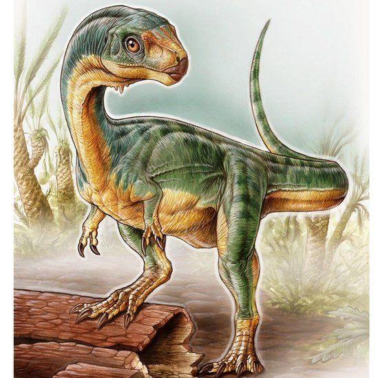

To the lobby :>
Chilesaurus Diegosuarezi 
Gran Dinosaurio Chileno

Chilesaurus diegosuarezi es la única especie conocida del género extinto
Chilesaurus de dinosaurio que vivió durante el Jurásico Superior, hace 150-146
millones de años en lo que es hoy Sudamérica. Sus fósiles fueron descubiertos
en la región de Aysén, en Chile.2 Al momento de su descripción,
se le consideró uno de los escasos terópodos herbívoros conocidos por fuera
de los celurosaurios.1 Tiene una inusual combinación de rasgos de
terópodos, ornitisquios, y sauropodomorfos, por lo que este género tiene importantes
implicaciones para el entendimiento de la evolución de los dinosaurios, tales
como la división tradicional entre saurisquios-ornitisquios o como apoyo a la
propuesta alternativa del grupo Ornithoscelida.3 Según los fósiles
encontrados en la Formación Toqui, Chilesaurus coexistió con otro terópodo
de tamaño pequeño, crocodiliformes basales, y dinosaurios saurópodos tanto
diplodócidos como titanosaurianos.

Chilesaurus medía unos 3,2 metros de la nariz a la cola. La pequeña
cabeza tiene dientes pequeños, en forma de espátula apuntando oblicuamente hacia delante. Esta
dentición, única en los terópodos, es típica de un herbívoro, indicando que Chilesaurus se
alimentaba de plantas, una adaptación muy inusual en terópodos, ya que la mayoría eran carnívoros.

Otra adaptación para comer plantas, es que el hueso púbico en la pelvis apunta hacia atrás. Tal
disposición de la pelvis es típica en ornitisquios, por lo cual en un principio se creyó que
parte de los fósiles de Chilesaurus pertenecían a este clado. Los miembros posteriores de
Chilesaurus se habían vuelto menos adaptados a correr, como se muestra por una pequeña cresta
cnemial en la parte superior frontal de la tibia, y un amplio pie, con un primer dedo de
soporte del peso. Chilesaurus podría defenderse con un brazo robusto, provisto de dos
garras, la primera grande y muy extendida, al igual que los sauropodomorfos basales.